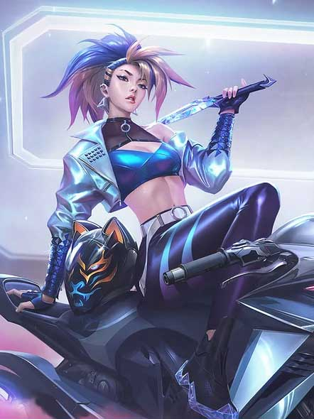

Songs
Pop/Stars
The Baddest
More
Villain
Drum Go Dum
I'll Show You
Members
Ahri
Ahri (voiced by Miyeon) is a nine-tailed foxgirl mage. In-game, her abilities revolve primarily around dashing around and a Charm ability which forces enemies to walk towards her. In K/DA, Ahri as a main vocalist.

Akali
Akali (voiced by Soyeon) is an assassin-type character in League who weaves in and out of the darkness and throws kunai at opponents. In K/DA, Akali is the rapper of the group.

Evelynn
Evelynn (voiced by Madison Beer) is, similar to Akali, an assassin-type character, whose lore is centered around being a succubus. In K/DA, Ahri and Evelynn serve as the main vocalists.

Kai'Sa
Kai'Sa (voiced by Jaira Burns) is marksman character. She shoots missiles from cannons floating above her shoulders. In K/DA, Kai'Sa is the main dancer of the group.